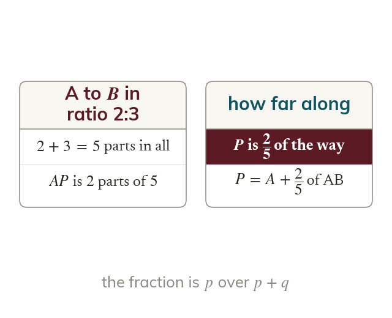
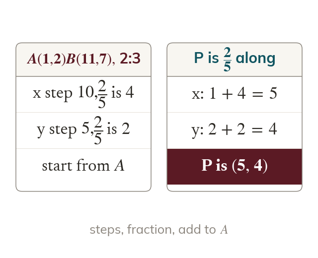
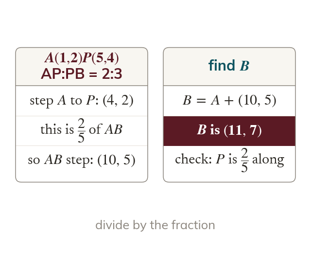
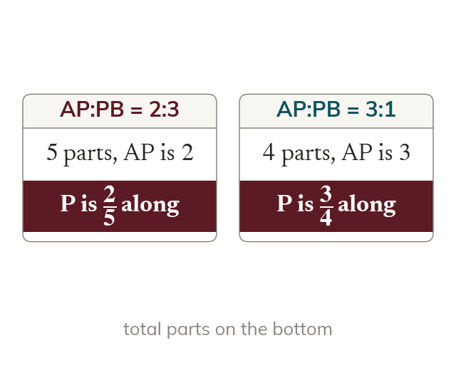

The fraction along
A ratio p:q splits AB into equal parts. So P is of the way from to .
If P divides AB in the ratio p:q then AB is split into equal parts and AP is of them. So P is of the way from to .
A point that divides a line in a ratio sits a fixed fraction of the way along it, and that fraction applies to the horizontal and vertical steps separately.
Work down the page at your own pace. Write every answer in your book first, then click to check it.
Read each card, then follow the worked examples one step at a time.

A ratio p:q splits AB into equal parts. So P is of the way from to .

The point adds a fraction of each step to the coordinates of A. For 2:3 the fraction is
Pick an answer. If it's wrong, the feedback tells you which mistake it was.
Section Dividing a line in a given ratio Exercise questions that find a point dividing a line in a given ratio.
Read each card, then follow the worked examples one step at a time.

The step from to is a fraction of the whole step. Dividing by that fraction gives the whole step from to .

The fraction always uses the total number of parts, A ratio 2:3 has parts in all and a ratio 3:1 has
Pick an answer. If it's wrong, the feedback tells you which mistake it was.
Section Dividing a line in a given ratio Exercise questions that find an unknown endpoint from a ratio and two other points.
Finished? Next lesson: 5.7a The Equation of a Circle.
Log in, then search for a code to practise that skill.